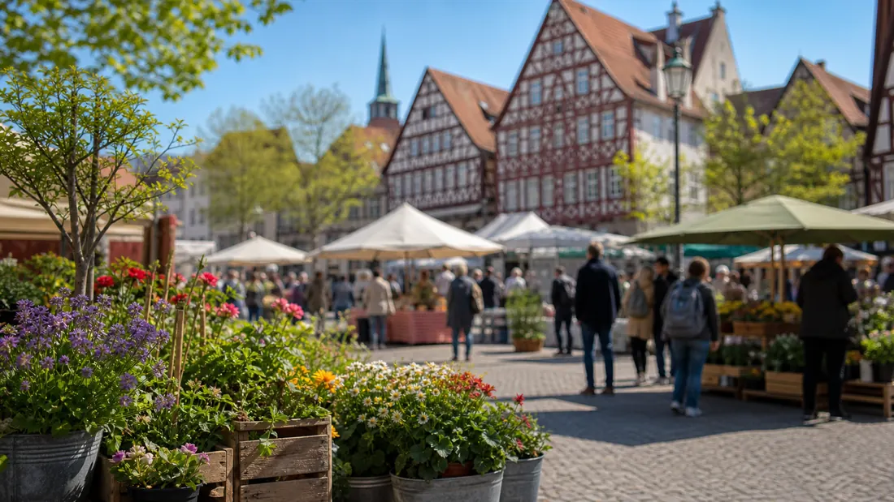

Tagesarchiv
55 regionale Meldungen
Alle Karten öffnen die jeweilige Originalmeldung.

Hessen Aktuell
Regionale Meldungen dieses Tages, gesammelt aus den aktiven Quellen und nach Stadt sowie Thema lesbar.
Tagesarchiv
Alle Karten öffnen die jeweilige Originalmeldung.
Meldungen

Kassel · Verkehr
Voraussichtlich ab 2033 erneuert die KVG das Gleiskreuz der Straßenbahn Am Stern. Die Stadt sieht die Chance, den Kreuzungsbereich und die sich anschließenden westlichen und östlichen Streckenabschnitte der Kurt-Schumacher-Straße und der Unteren Königsstraße nördlich der Kreuzung verkehrlich aufzuwerten.

Kassel · Verkehr
Grundstückseigentümerinnen und -eigentümer sind durch das Hessische Straßengesetz dazu verpflichtet, ihre Hecken, Büsche und Bäume so zu schneiden, dass sie Verkehrsteilnehmende nicht gefährden. Jetzt ist die richtige Zeit für den Rückschnitt, rät das städtische Straßenverkehrs- und Tiefbauamt.

Kassel · Veranstaltungen
Die Stadt Kassel und der Volksbund Deutsche Kriegsgräberfürsorge laden am Sonntag, 15. November, um 12 Uhr zu einer Gedenkveranstaltung anlässlich des Volkstrauertages in den Bürgersaal des Kasseler Rathauses ein.

Kassel · Politik
Qualifizierungsreihe „Kompetent begleiten, sicher betreuen“ vermittelt pädagogische Grundlagen für die Ganztagsbetreuung an Grundschulen

Kassel · Politik
Digitale Werkzeuge helfen beim Energiesparen, bei Sanierungsvorhaben und der Nutzung erneuerbarer Energien Weitere Details, Hintergründe und vollständige Angaben stehen in der verlinkten Originalmeldung.

Kassel · Politik
183 Menschen erhielten 2026 erstmals die Ehrenamtskarte Weitere Details, Hintergründe und vollständige Angaben stehen in der verlinkten Originalmeldung.

Kassel · Politik
Vermittlung von Pferden aus Tierschutzfall in fachkundige und liebevolle Hände Weitere Details, Hintergründe und vollständige Angaben stehen in der verlinkten Originalmeldung.
Kassel · Politik
Förderprogramm läuft Ende des Jahres aus - Dorfscheune in Hümme und Spielplatz in Hombressen sind die letzten Maßnahmen Weitere Details, Hintergründe und vollständige Angaben stehen in der verlinkten Originalmeldung.

Kassel · Polizei
In dem Ermittlungskomplex wegen besonders schweren Fällen von Erpressungen und Brandstiftungen ermitteln die Kasseler Staatsanwaltschaft und die eigens eingerichtete AG Bistro weiterhin mit Hochdruck.

Kassel · Polizei
Am 16.09.2026 gab es die nordhessische Premiere zum Format „Musik trifft Prävention“ in Bad Arolsen. Knapp 300 Bürgerinnen und Bürger waren der Einladung der Stadt Bad Arolsen gefolgt.

Kassel · Polizei
Großer Andrang, viele tolle Gespräche und starkes Interesse an den verschiedenen Berufen der Einsatzkräfte: Darauf kann die Blaulichtfamilie nach der Veranstaltung in Kassel zurückblicken.

Kassel · Polizei
Die Kasseler Polizei und die Staatsanwaltschaft Kassel ermitteln aktuell in drei mutmaßlichen Erpressungsfällen, bei denen eine Tätergruppe von verschiedenen Geschäftsinhabern Geldsummen forderten.
Kassel · Polizei
Im Rahmen der Aktion "Blitz for Kids" hat die nordhessische Polizei zusammen mit Schülerinnen und Schülern Geschwindigkeitskontrollen im Umfeld von Schulen und Kitas durchgeführt.
Frankfurt · Polizei
Frankfurt (ots) - (ma) Die seit Samstagabend (7.November 2026) vermisste 13-jährige Julia K. aus Frankfurt Bornheim konnte angetroffen werden. Die Öffentlichkeitsfahndung wird hiermit zurückgenommen. Rückfragen bitte an: Polizeipräsidium ...

Frankfurt · Verkehr
Frankfurt (ots) - (ma) Seit Donnerstagmorgen (5 November 2026), gegen 08:20 Uhr, wird der 36-jährige Sami, N. aus Frankfurt Fechenheim vermisst. Letztmalig wurde r an seiner Wohnanschrift im Bereich der Dieburger Straße gesehen. Es kann nicht ...
Frankfurt · Polizei
Frankfurt (ots) - (ma) Der seit Mittwoch (4. November 2026) vermisste 66-jährige Mehmet S. konnte angetroffen werden. Die Öffentlichkeitsfahndung wird daher zurückgenommen. Rückfragen bitte an: Polizeipräsidium Frankfurt am Main Pressestelle ...
Frankfurt · Polizei
Frankfurt (ots) - (ma) Am Sonntagabend (8. November 2026) wählte eine 56-jährige Frau gegen 23:35 Uhr eigenständig den Notruf und gab an, sich in einem psychischen Ausnahmezustand zu befinden. Umgehend begaben sich zwei Streifen- und ein ...

Frankfurt · Verkehr
Frankfurt (ots) - (ma) Am Sonntagabend (8. November 2026) fiel einer Streife gegen 22:00 Uhr im Bereich der Hochstraße ein Fahrzeug auf, welches augenscheinlich mit überhöhter Geschwindigkeit unterwegs war. Die Streifenwagenbesatzung fuhr dem ...
Frankfurt · Verkehr
Damit alt und neu zusammenwachsen können, fährt die U5 im kommenden Jahr verkürzt. Weitere Details, Hintergründe und vollständige Angaben stehen in der verlinkten Originalmeldung.
Frankfurt · Verkehr
Es kommt zu Einschränkungen bei U- und Straßenbahnen. Weitere Details, Hintergründe und vollständige Angaben stehen in der verlinkten Originalmeldung.

Frankfurt · Sicherheit
Gemeinsam für Sicherheit und besseren Aufenthalt. Weitere Details, Hintergründe und vollständige Angaben stehen in der verlinkten Originalmeldung.
Frankfurt · Verkehr
Linien 12, 15, 19 und 21 auf Umwegen/ SEV eingerichtet Weitere Details, Hintergründe und vollständige Angaben stehen in der verlinkten Originalmeldung.
Frankfurt · Verkehr
Linie auf Strecke Heerstraße – Eissporthalle reduziert, U4 bindet Enkheim an Weitere Details, Hintergründe und vollständige Angaben stehen in der verlinkten Originalmeldung.

Frankfurt · Sicherheit
Aktuell häufen sich in Frankfurt und in der Rhein-Main-Region Werbebriefe, die zum schnellen Wechsel auf intelligente Stromzähler, sogenannte Smart Meter, drängen.

Frankfurt · Wirtschaft
Mainova unterstützt die F-Jugend des JFV Walsdorf/Wörsdorf e. V. mit vergünstigten Trikotsätzen – Fußballlegende Charly Körbel begleitet die Übergabe.
Frankfurt · Verkehr
Die Mainova AG beginnt am Montag, 26. Oktober 2026, mit vorbereitenden Maßnahmen für den künftigen Fernwärmeanschluss des Frankfurter Zoos.

Frankfurt · Wirtschaft
Mainova bestätigt hohe Leistungsfähigkeit Weitere Details, Hintergründe und vollständige Angaben stehen in der verlinkten Originalmeldung.
Frankfurt · Verkehr
Die Preise für Fernwärme im Tarif Wärme Classic steigen turnusgemäß zum 1. Oktober 2026 leicht an. Das wirkt sich je nach Verbrauch und angeschlossener Leistung unterschiedlich aus. Grundlage hierfür sind die vertraglich festgelegten Preisformeln.
Wiesbaden · Verkehr
Die Kleiststraße wird zwischen der Hausnummer 11 und der Wielandstraße von Montag, 16. November, bis voraussichtlich Sonntag, 14. Februar 2027, voll gesperrt. Grund ist die Erneuerung des Kanals und der Verlegung von Fernwärmeleitungen.
Wiesbaden · Politik
Ein halbes Jahrhundert Schwimmspaß. Das Hallenbad Kleinfeldchen feiert sein 50-jähriges Bestehen. Aus diesem Anlass erwartet die Besucherinnen und Besucher am Samstag, 14. November, ein abwechslungsreiches Jubiläumsprogramm mit Angeboten für die ganze Familie und einer großen Pool-Party am Abend.
Wiesbaden · Verkehr
Ab Montag, 9. November, weisen die Info-Bildschirme in Bussen der ESWE Verkehr auf die Medizinische Soforthilfe nach Vergewaltigung in Wiesbaden hin. Die Kampagne läuft bis Sonntag, 13. Dezember, und wird durch Mittel des Hessischen Ministeriums für Arbeit, Integration, Jugend und Soziales (HMAIJS) ermöglicht.
Wiesbaden · Verkehr
Mit augenzwinkernden Sprüchen im Dialekt sorgt das Verkehrsdezernat für gute Laune im Stadtverkehr. Die neuen Botschaften sind an den Ortseingängen und entlang der Innenstadtringe zu sehen.
Wiesbaden · Verkehr
Auch in diesem Jahr beteiligt sich das Kinder-, Jugend- und Stadtteilzentrum Biebrich, Straße der Republik 17–19, Amt für Soziale Arbeit, an der Weihnachtspäckchenaktion der Stiftung Kinderzukunft.
Wiesbaden · Verkehr
Wiesbaden (ots) - Vollsperrung nach umgestürztem Anhänger, Limburg, Bundesautobahn 3, Montag, 09.11.2026, 22:40 Uhr (il)In der Nacht von Montag auf Dienstag kam es zu einer Vollsperrung auf der Bundesautobahn 3, nachdem zuvor ein Anhänger ...
Wiesbaden · Polizei
Wiesbaden (ots) - 1. Knallkörper in Richtung Passanten geworfen - Zwei Personen verletzt, Wiesbaden-Mitte, Kirchgasse, Freitag, 06.11.2026, 20:05 Uhr (kq)Am Freitagabend wurden zwei Personen in der Wiesbadener Innenstadt durch einen Knallkörper ...
Wiesbaden · Polizei
Wiesbaden (ots) - 1. Zwei verletzte Polizeibeamte nach körperlichen Angriffen, Wiesbaden, Schwalbacher Straße, Sonntag, 08.11.2026, 00:40 Uhr (jul) In der Nacht von Samstag auf Sonntag wurden zwei Polizeibeamte in der Wiesbadener Innenstadt ...
Wiesbaden · Polizei
Wiesbaden (ots) - 1. Polizeibeamter bei Kontrolle angegriffen und verletzt, Wiesbaden-Nordost, Parkstraße, Freitag, 06.11.2026, 02:05 Uhr (kq)In der Nacht zum Freitag wurde ein Polizeibeamter während einer Kontrolle in der Parkstraße in ...
Wiesbaden · Polizei
Wiesbaden (ots) - Planenschlitzer beschädigen nicht nur Lastkraftwagen und stehlen Ladung, sondern hinterlassen bisweilen verunsicherte Fahrer, sorgen für erhebliche wirtschaftliche Schäden und nicht zuletzt auch Verzögerungen in der ...
Darmstadt · Politik
Wissenschaftsstadt Darmstadt und vielbunt e.V. gedenken am 20. November der Opfer transfeindlicher Gewalt Weitere Details, Hintergründe und vollständige Angaben stehen in der verlinkten Originalmeldung.
Darmstadt · Politik
Entwicklung soll mit den Menschen im Stadtteil geplant werden Weitere Details, Hintergründe und vollständige Angaben stehen in der verlinkten Originalmeldung.
Darmstadt · Polizei
Darmstadt (ots) - Der seit Sonntag (8.11.) vermisste 63-jährige Mann aus Darmstadt ist wohlbehalten angetroffen worden. Die Öffentlichkeitsfahndung wird somit zurückgenommen. Die Polizei bedankt sich für die Unterstützung bei der Suche nach dem ...

Darmstadt · Veranstaltungen
Darmstadt (ots) - Bislang unbekannte Täter nahmen zwischen Freitagabend (6.11.) und Samstagmorgen (7.11.) einen Kindergarten im Meißnerweg ins Visier. Nach derzeitigem Ermittlungsstand verschafften sich die Kriminellen gewaltsam über eine Tür ...
Darmstadt · Polizei
Darmstadt (ots) - Zwischen Donnerstagabend (5.11.) und Freitagmorgen (6.11.) hatten es bislang unbekannte Kriminelle auf eine Schule in der Vogelsbergstraße abgesehen. Aktuellen Erkenntnissen zufolge drangen die Täter über ein Fenster in das ...
Darmstadt · Polizei
Darmstadt (ots) - Nach einem Diebstahl in einem Geschäft in der Rheinstraße am Donnerstagmorgen (5.11.) nahmen Polizeikräfte einen 41-jährigen Tatverdächtigen vorläufig fest. Nach bisherigen Ermittlungen soll der Mann gegen 11.30 Uhr Waren an ...
Darmstadt · Polizei
Darmstadt (ots) - In der Nacht zum Freitag (6.11.) kam es gegen 23 Uhr in der Mühlstraße zu einem Brand von zwei Müllbehältern. Bei Eintreffen der alarmierten Rettungskräfte hatte ein Passant bereits den Brand in einem Müllbehälter gelöscht. ...
Hessen · Verkehr
Hessen wirbt bei der 50. Raumentwicklungsministerkonferenz für einfachere Umweltprüfungen. Weitere Details, Hintergründe und vollständige Angaben stehen in der verlinkten Originalmeldung.

Hessen · Sicherheit
Land stellt 375,8 Millionen Euro in erster Fördertranche bereit. Rekordsumme für Junges Wohnen. Weitere Details, Hintergründe und vollständige Angaben stehen in der verlinkten Originalmeldung.
Hessen · Verkehr
Das Land Hessen unterstützt Lauterbach nach dem Großbrand mit 912.000 Euro. Die Förderung dient dem Wiederaufbau und der Weiterentwicklung der Altstadt.
Hessen · Verkehr
Nach Baupaket I nimmt Hessen jetzt die technischen Vorgaben selbst in den Blick. Mansoori stellt weitere Erleichterungen beim Bauen im Bestand und bei Bauanträgen vor.
Hessen · Verkehr
GeoProH liefert ein genaueres Bild des Untergrunds im Oberrheingraben. Land, Kommunen und Unternehmen beraten nächste Erkundungsschritte.
Hessen · Politik
Zum 88. Jahrestag der Reichspogromnacht hat Ministerpräsident Boris Rhein an die Opfer erinnert. Den Schutz von Jüdinnen und Juden hat er als elementare Aufgabe bezeichnet.
Hessen · Politik
Drei Initiativen sind mit dem Integrations- und Teilhabepreis 2026 ausgezeichnet worden. Sie stärken Frauen mit Migrations- und Fluchterfahrung.
Hessen · Politik
Mit dem Investitionsprogramm der Hessenkasse unterstützt das Land Kommunen mit insgesamt 630 Millionen Euro Landesgeld. Weitere Details, Hintergründe und vollständige Angaben stehen in der verlinkten Originalmeldung.
Hessen · Politik
Regierungschef Rhein: „Alle Geehrten engagieren sich auf ganz unterschiedliche Weise für andere, doch immer mit großer Tragweite.“

Hessen · Sicherheit
Innenminister Poseck und Justizminister Heinz: „Wer Einsatzkräfte angreift, muss mit empfindlichen Strafen rechnen.“ Weitere Details, Hintergründe und vollständige Angaben stehen in der verlinkten Originalmeldung.